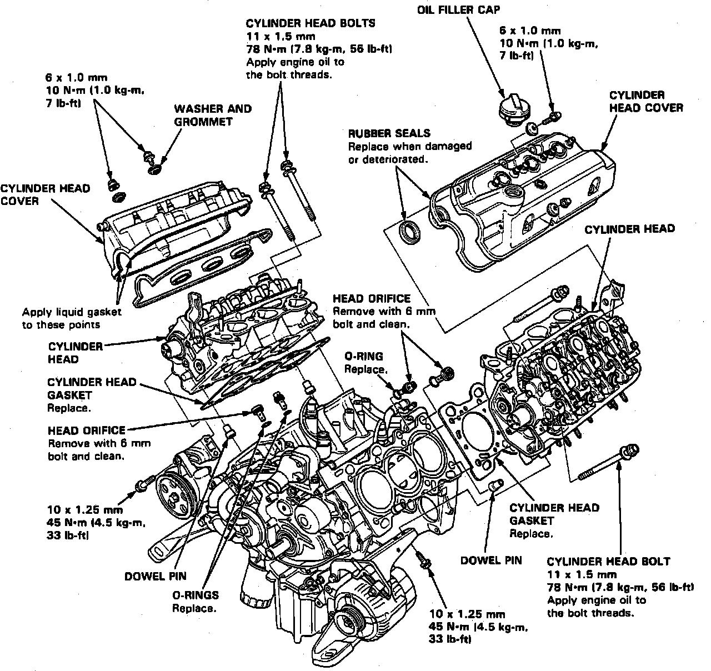
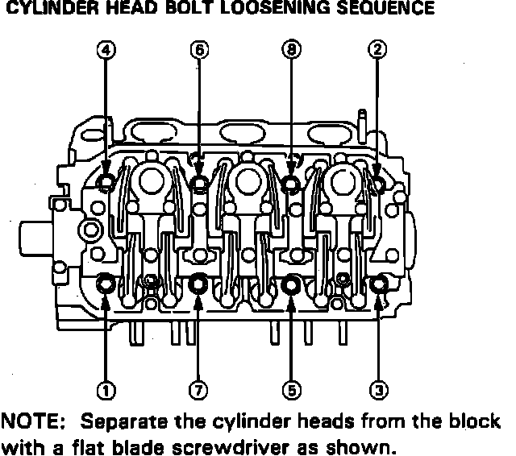
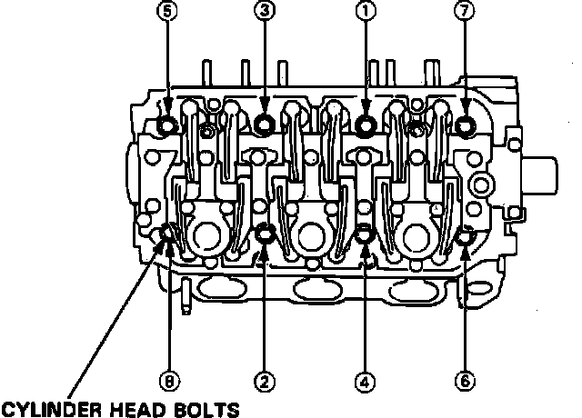

Cylinder Head Assembly: Service and Repair
Fig. 8 Fuel Pressure Relief:

1. Disable coded theft protection system as described under Accessories and Optional Equipment / Antitheft and Alarm Systems / Service and Repair.
2. Disarm airbag system as described under Air Bags and Seat Belts / Air Bags (Supplemental Restraint Systems) / Airbag System Disarming.
3. Remove battery and battery tray.
4. Remove air cleaner and air intake.
5. Drain cooling system.
6. Remove brake booster vacuum hose from tubing manifold.
7. Remove engine ground cable from cylinder head and block.
8. Relieve fuel pressure, then remove fuel filler cap. Place shop towel over area, then slowly loosen service bolt on fuel filter one turn at a time, Fig. 8.
9. Disconnect fuel hose and fuel return hose.
10. Disconnect throttle cable at throttle body.
11. Disconnect charcoal canister hose at throttle valve.
12. Disconnect main fuse box terminal and electrical connectors, then remove fuse box.
13. Disconnect ignition coils electrical connectors, then remove ignition coils.
14. Remove engine harness covers.
15. Disconnect harness electrical connectors as follows for RH cylinder head:
a. Injector connectors.
b. TW sensor.
c. EGR sensor.
16. Disconnect harness electrical connectors as follows for LH cylinder head:
a. Injector connectors.
b. CRANK/CYL sensor.
c. Temperature gauge sender.
d. TA sensor.
e. Knock sensor.
17. Remove air inlet pipe.
18. Remove vacuum pipe and hoses.
19. Remove throttle sensor and right and left oxygen sensor electrical connectors, then engine ground straps.
20. Remove breather pipe.
21. Remove fuel return hose.
22. Remove air suction pipe and EGR pipe.
23. Remove water passage with intake manifold assembly.
24. Remove timing belt upper covers.
25. Loosen timing belt adjusting bolt 180° to release belt tension.
26. Remove timing belt.
27. Remove cam pulleys.
28. Remove timing belt cover plates.
29. Remove CRANK/CYL sensor from LH cylinder head.
Fig. 34 Cylinder Head Replacement:

Fig. 35 Cylinder Head Bolt Loosening Sequence:

Fig. 36 Cylinder Head Bolt Tightening Sequence:

30. Remove cylinder head covers, Fig. 34.
31. Remove three alternator bracket and two power steering bracket attaching bolts.
32. Remove exhaust pipe locknuts, the disconnect exhaust pipes from manifolds.
33. Remove cylinder head bolts in sequence, Fig. 35.
34. Remove right and left exhaust manifold cover, then manifolds.
35. Reverse procedure to install. Torque cylinder head bolts in sequence, Fig. 36, to specifications.
36. Restore coded theft protection system and rearm airbag.